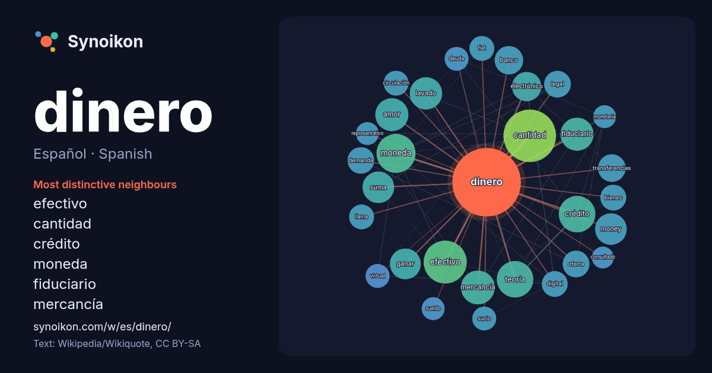

Español · Spanish · popular word
dinero
“money” · The words found around it in 1487 instances from Spanish Wikipedia, Wikiquote.

Most distinctive neighbours
- efectivo 36×
- cantidad 32×
- crédito 26×
- moneda 25×
- fiduciario 24×
- mercancía 23×
- lavado 22×
- money 21×
- suma 18×
- electrónico 17×
- teoría 17×
- amor 15×
- transferencias 15×
- ganar 15×
- fíat 14×
- oferta 14×
- demanda 13×
- legal 13×
- sucio 13×
- circulación 12×
× = how many times more often than in general Spanish Wikipedia text.
Most frequent neighbours
- cantidad 58
- efectivo 39
- moneda 32
- crédito 28
- teoría 28
- tipo 28
- forma 26
- mercancía 24
- amor 23
- fiduciario 23
- lavado 22
- hombre 21
- money 21
- persona 21
- suma 21
- ganar 20
- cambio 19
- electrónico 18
- banco 17
- transferencias 16
In context
- de dinero son: las monedas, las divisas y los billetes, las tarjetas de débito y crédito, y las transferencias electrónicas, entre otros. El dinero tal Wikipedia snippets · Dinero
- El lavado de dinero (también conocido como lavado de capitales, lavado de activos, blanqueo de dinero, o blanqueo de capital) es el proceso de cambiar Wikipedia snippets · Lavado de dinero
- El dinero por decreto, comúnmente llamado dinero fíat (del latín fiat, 'hágase') es una forma de dinero fiduciario cuya cualidad de dinero proviene de Wikipedia snippets · Dinero por decreto
- Dinero negro, dinero gris, dinero sucio , dineros calientes o dinero B es el dinero, ya sea efectivo o bancario, que no ha sido declarado a Hacienda Wikipedia snippets · Dinero negro
- El dinero en efectivo (habitualmente denominado solo efectivo), dinero en metálico, o cash, es el dinero en forma de monedas o papel moneda (billetes) Wikipedia snippets · Dinero en efectivo
- El dinero electrónico (también conocido como e-money, efectivo electrónico, moneda electrónica, dinero digital, efectivo digital o moneda digital) se Wikipedia snippets · Dinero electrónico
- El dinero jaqués o dinero aragonés es un tipo de moneda de vellón emitida en el Reino de Aragón desde la segunda mitad del siglo XI hasta 1728, aunque Wikipedia snippets · Dinero jaqués
- El dinero fiduciario o moneda fiat, (del latín fiduciarĭus, de fiducĭa, 'confianza' y esta a su vez de fides, 'fe') es un tipo de dinero utiliz … Wikipedia snippets · Dinero fiduciario
More Spanish words
- agua
- arte
- bosque
- caballo
- camino
- campana
- canción
- ciencia
- ciudad
- clima
- comida
- corazón
- desierto
- dios
- espejo
- estrella
- familia
- fuerza
- gato
- historia
- invierno
- isla
- jardín
- lengua
- lluvia
- madre
- mapa
- miel
- montaña
- muerte
- naturaleza
- oro
- otoño
- pan
- perro
- puente
- reloj
- sal
- salud
- silencio
- sombra
- tiempo
- tormenta
- trabajo
- tren
- té
- verano
- verdad
- vida
Precomputed on 2026-10-09 with default settings (±5 words, medium corpus). The interactive map can refresh it with live data.